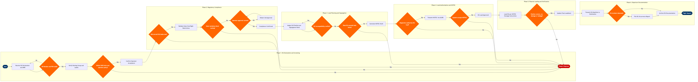

Dangerous Goods Load Authorization
Flight Operations › Flight Dispatch & Control · 20 L4 steps · 6 phases · 4 decision gates · Updated 2026-10-01 20:52
📊
Process Flow Diagram (BPMN)

📋
L4 Process Steps
| Step | Step Name | Role / Swim Lane | System | Input | Output | KPI | Dec? | Exc? |
|---|---|---|---|---|---|---|---|---|
Phase 1 1.1 |
Receive Shipper DG Declaration & Air Waybill | Cargo Acceptance Agent | CargoWise (cargo management platform) | Shipper's Declaration for Dangerous Goods (IATA DGR Sec 8.1.6 format), Air Waybill | DG shipment record created in cargo system with initial classification flag | DG acceptance processing time ≤30 min per shipment | N | N |
| 1.2 | Validate UN Number and Proper Shipping Name | Cargo Acceptance Agent | IATA DGR e-Tool (electronic dangerous goods database) | UN number and proper shipping name from shipper's declaration | DG classification confirmed or rejected; discrepancy report if mismatch | Classification error rate <0.5% of DG shipments processed | Y | N |
| 1.3 | Verify Packing Group, Quantity Limits & Label Compliance | DG Acceptance Supervisor | IATA DGR e-Tool | Physical package inspection, shipper's declaration packing details | Packing compliance report; label and marking verification sign-off | DG package rejection rate for non-compliance ≤2% of DG shipments; lithium battery state-of-charge verification rate 100% | Y | Y |
| 1.4 | Check Operator Acceptance Policy & Forbidden DG List | Cargo Acceptance Supervisor | CargoWise (operator DG policy rules engine) | DG classification, operator Cargo Acceptance Policy manual, forbidden items registry | Operator acceptance or rejection decision; special approval requirement flagged if applicable | Operator policy compliance rate 100%; forbidden item interception rate 100% | Y | Y |
Phase 2 2.1 |
Verify Aircraft Type DG Limits (PAX vs CAO) | Load Control Agent | Amadeus Altéa DCS (Departure Control System) | DG class and quantity, aircraft registration, flight number | Aircraft-specific DG quantity limits confirmed per IATA DGR Table 2.3; PAX/CAO classification applied | Per-aircraft DG limit compliance rate 100%; last-minute aircraft swap DG re-check completion rate 100% | Y | N |
| 2.2 | Validate State & Overflight DG Restrictions for Routing | Flight Dispatcher | Jeppesen FliteDeck (state restriction and NOTAMs database) | Flight routing waypoints, DG class, UN number, quantity | State variation compliance confirmation or routing conflict advisory | State restriction check completion rate 100% per DG-carrying flight; overflight violation rate 0% | N | Y |
| 2.3 | Confirm Operator Approval for Restricted DG Classes | DG Compliance Specialist | CargoWise (operator approval registry module) | DG class requiring specific operator approval (Class 1 explosives, Class 7 radioactive, infectious substances) | Operator approval number confirmed and recorded; CAA authorisation obtained if required | Approval verification cycle time ≤4 hours for restricted classes; approval expiry miss rate 0% | N | Y |
Phase 3 3.1 |
Assign ULD Position per DG Segregation Rules | Load Control Agent | Amadeus Altéa LoadPlanner (weight & balance system) | DG class, quantity, ULD type, aircraft hold configuration, passenger manifest | DG ULD or bulk position assignment in hold; preliminary centre-of-gravity impact noted | DG stowage compliance rate 100%; CG deviation ≤±0.5% MAC from target | N | N |
| 3.2 | Run DG Compatibility Matrix Check Across All Shipments | Load Control Agent | Amadeus Altéa LoadPlanner | All DG shipments on the flight, IATA DGR Table 9.3 segregation matrix | Compatibility check result; stowage conflict report if incompatible DG classes co-located | Segregation non-conformance rate 0%; compatibility check cycle time ≤10 min | N | Y |
| 3.3 | Calculate Total DG Quantities vs Aircraft Hold Limits | Load Control Agent | Amadeus Altéa LoadPlanner | All assigned DG ULD positions, per-hold DG limits from aircraft type profile | DG quantity compliance summary per hold compartment; net explosive mass (NEM) calculation where applicable | Per-hold DG limit compliance 100%; NEM calculation accuracy within ±1% | N | N |
| 3.4 | Generate NOTOC Draft in IATA Standard Format | Load Control Agent | Amadeus Altéa DCS (NOTOC generation module) | Confirmed DG positions, classes, UN numbers, quantities, stowage locations from load plan | Draft NOTOC (Notice to Captain) in IATA-standard format ready for dispatcher review | NOTOC generation time ≤15 min after load plan finalised; NOTOC accuracy rate ≥99.9% | N | N |
Phase 4 4.1 |
Dispatcher DG Load Authorization Sign-Off | Flight Dispatcher / Load Controller | Amadeus Altéa DCS | DG compliance checklist, NOTOC draft, load plan, dispatcher training currency record | Signed DG load authorization record; compliance checklist archived | Authorization completion ≥D-45 min (45 min before departure); 100% sign-off completion rate | N | Y |
| 4.2 | Transmit NOTOC to Captain via ACARS Datalink | Load Controller | SITA ACARS (aircraft communications and reporting system) | Finalised NOTOC, captain ACARS uplink address, departure gate | NOTOC delivered to flight deck with ACARS delivery confirmation timestamp | NOTOC ACARS delivery confirmation rate ≥99%; delivery completed ≥D-30 min | N | Y |
| 4.3 | Captain Reviews and Accepts NOTOC | Captain (PIC) | Jeppesen FliteDeck (EFB NOTOC viewer) | NOTOC received via ACARS or EFB datalink; DG policy briefing from dispatcher | Captain acceptance acknowledgement or rejection with stated reason | Captain NOTOC rejection rate <1% of DG flights; acceptance completed ≥D-20 min | N | Y |
Phase 5 5.1 |
Ramp Agent Loads DG per NOTOC Stowage Instructions | Ramp Supervisor / Cargo Handler | SITA Airport Management System (AMS) | Finalised NOTOC, ULD build sheets, Loading Instruction Report (LIR) | DG ULDs or bulk items loaded at designated hold positions as per NOTOC | DG loading position accuracy 100%; loading completion ≥D-25 min | N | N |
| 5.2 | Verify DG Load Position and Condition Post-Loading | Loading Supervisor | SITA Airport Management System (AMS — loading confirmation module) | NOTOC stowage locations, physical hold inspection, DG condition checklist | DG load verification sign-off; discrepancy or damage report if applicable | DG load verification completion rate 100% ≥D-20 min; discrepancy rate <0.5% | N | Y |
| 5.3 | Update Final Loadsheet with Confirmed DG Positions | Load Controller | Amadeus Altéa DCS (loadsheet module) | Verified DG hold positions, ULD manifest, passenger and cargo weights | Final signed loadsheet with DG positions confirmed; takeoff weight and CG transmitted to cockpit | Loadsheet finalisation ≥D-15 min; weight discrepancy vs actual ≤0 kg | N | Y |
Phase 6 6.1 |
Transmit DG Manifest to Destination & En Route Stations | Flight Dispatcher | SITA ACARS / Amadeus Altéa DCS (inter-station messaging) | Final NOTOC, DG manifest with UN numbers, classes, quantities and positions | DG advance notification transmitted to destination and en route handling agents | Destination DG advance notification lead time ≥2 hours before scheduled arrival (IATA RP 1654); transmission success rate 100% | N | N |
| 6.2 | File DG Occurrence Report if Incident Detected | DG Compliance Specialist / Safety Officer | Safety Management System (SMS) integrated with ECCAIRS (EU) or FAA ASRS (US) | DG handling incident, package damage, leakage, or undeclared DG discovery during loading | DG occurrence report filed per ICAO Annex 18 Chapter 14 and applicable national CAA requirements | DG incident reporting compliance 100%; report filed ≤72 hours of incident per ICAO Annex 18 | N | Y |
| 6.3 | Archive DG Documentation per Regulatory Retention Policy | Cargo Records Administrator | CargoWise (document archive and retention management module) | NOTOC, shipper DG declarations, acceptance checklist, captain sign-off, loading verification | DG documentation set archived with jurisdiction-appropriate retention flag applied | Documentation archival rate 100% within 4 hours of flight departure; retrieval time for audit requests ≤2 min | N | N |
📋